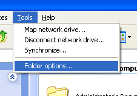
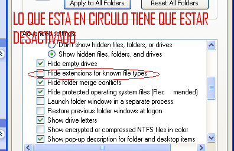
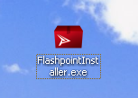
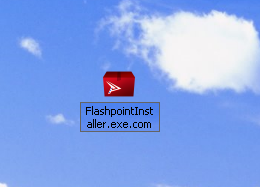

Primer paso: Presiona WIN + E, ve a la pestaña Vista y haz clic en Opciones.

Segundo paso: Ve a la pestaña Ver, baja hasta encontrar “Ocultar las extensiones de archivo para tipos conocidos” y desactívalo.

Tercer paso: Descarga el programa que quieras ejecutar, por ejemplo Flashpoint.

Cuarto paso: Renómbralo para que el archivo termine en .COM.

Quinto paso (EXTRA y menos webeo): Cambia el nombre del archivo y ponle “explorer”. O otro nombre de archivo critico para el funcionamiento de windows. Esto funciona porque explorer es un proceso crítico de Windows y no se bloquea.